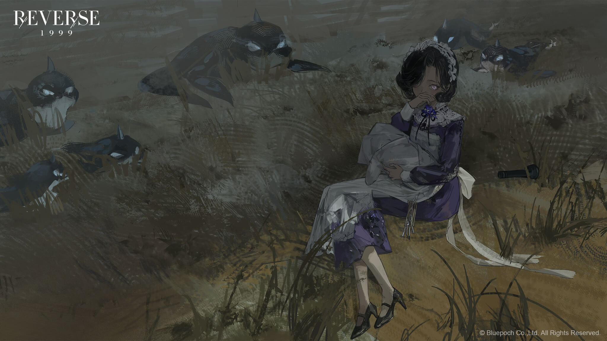
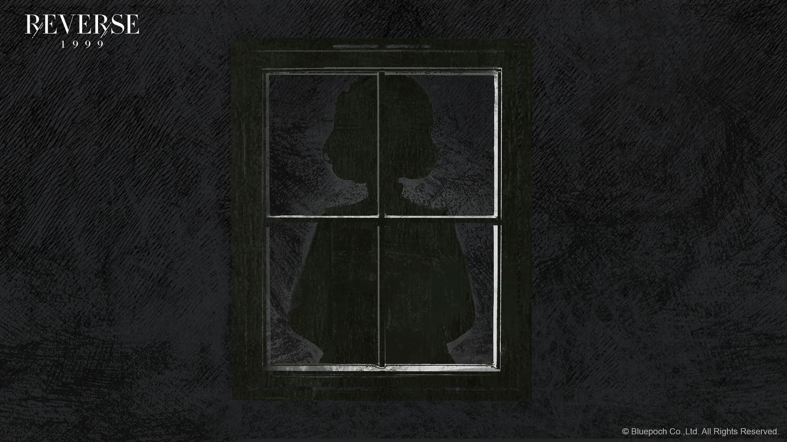
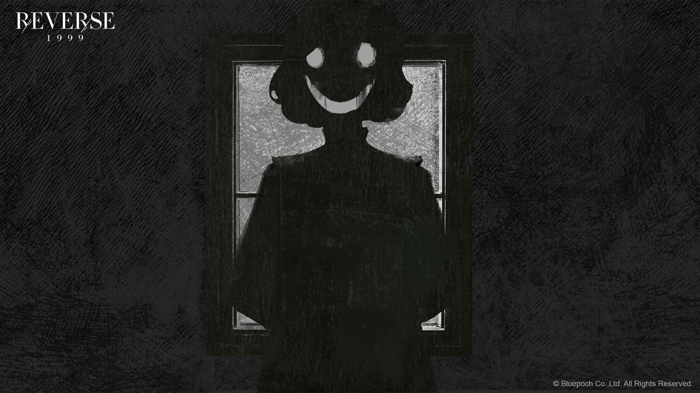
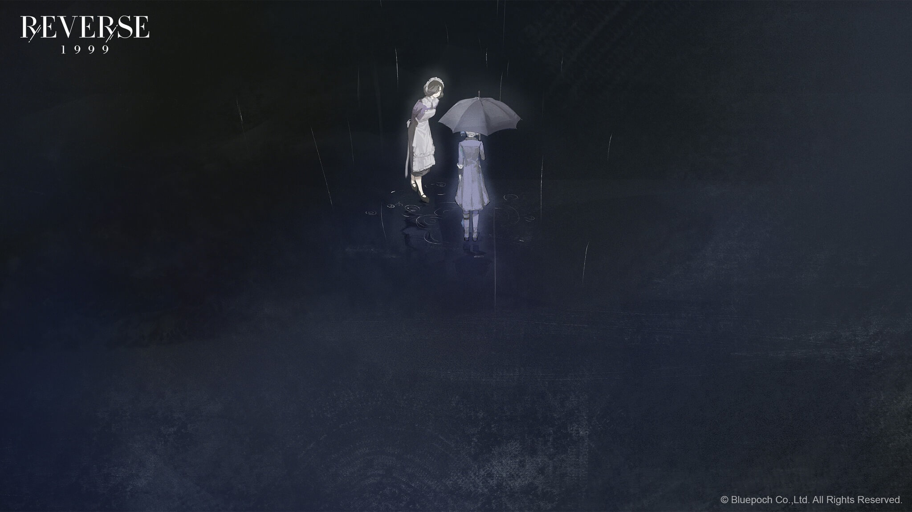
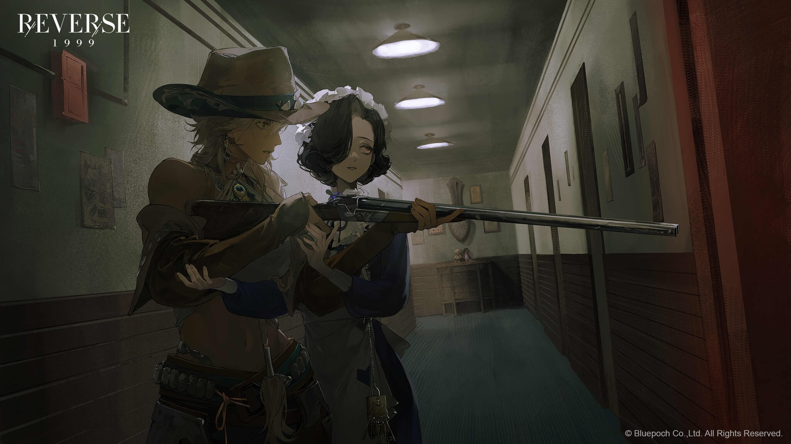

Vertin and Lilya were looking for UTTU's editor Barbara to ask about Urd's location.
They got a call from the Foundation to inform them about the evacuation at the nearby Zeno base, and it made Lilya wonder if she would get her Red 38 that they took for maintenance back. Vertin offered to do a detour to check on it but the taxi driver refused on account of the recent ghost sightings on the route. A thick fog suddenly appeared and the driver said they should stay in the car until the fog was gone. Suddenly there was a loud scratching noise from the roof and the driver fainted in fear. Lilya tried to drive the car in his stead, but found out she couldn't so they decided to get out and walk. They heard a baby crying and after following the noise, found a maid carrying a swaddled baby being attacked by critters. The maid said people called her Tuesday, and she worked at the Tuesday's motel nearby. She was waiting for a guest who hadn't arrived yet and offered to lead them back to route 77 since the guest wasn't there yet. However, when they got back the driver had left, leaving their luggage on the side of the road, so they decided to stay at Tuesday's motel. As they were checking in, Lilya asked if Tuesday knew where the nearest armament factory was and Tuesday gave her a map, so she left to go pick up her Red 38. Vertin asked if Tuesday had seen a sheep-headed arcanist and Tuesday said no. She led Vertin upstairs and they saw Argus asking Kimberly to swap rooms with her. According to Tuesday, Kimberly had been staying at the motel for about a month, and Argus recently checked in after crashing her car, although she seemed to have recovered from her injuries. Since her arrival, Argus kept asking to swap rooms with other guests for some reason. They were interrupted by Stefen, another of the motel guest, who came out from his room muttering about the mirror. He recognised Vertin even though Vertin didn't know who he was, accusing her of being a murderer and being given a medal for killing people. He continued rambling about the woman rotting in the tub, the sheep-headed arcanist, and the one in the mirror. At the end of his rambling, he lunged at them but Argus knocked him out with the butt of her shotgun. Kimberly agreed to swap rooms with Argus and Argus told Tuesday not to bother tidying up the room for her first.

In her room, Vertin tried to call Lilya but there was no response. The room phone rang and she could only hear taps, which she decoded to be "respond" in Morse. The call suddenly ended and when the phone rang again, it was Tuesday who told her that the communication tower cable was chewed through by critters so they couldn't contact anyone outside, but the internal communication in the motel was fine. After hanging up, Vertin noticed the arcane array on the bedside table, which she remembered seeing in school, when their teacher warned them that it was a dangerous array that could easily overwhelm the caster and lead to destruction. Argus knocked on her door and asked to swap rooms with her, and Argus admitted she wasn't looking for someone, but rather traces left by someone. Vertin agreed to let her inspect the room in exchange for her help and Argus agreed. She confirmed the array was made pretty recently and that she saw hoofprints around the motel, which Vertin figured could belong to Barbara. Their investigation was interrupted by the sound of gunshot followed by Kimberly's scream, and they went out to the hallway to check and found Stefen lying dead with a gun in his hand. During their questioning, Kimberly said Stefen was harassing her and she had to get Tuesday involved. Even after he gave her an apology note, he was still loitering in front of her room. She told them that when he recovered after getting knocked out by Argus, he started accusing her of being in cahoots with Zeno and that it wasn't a coincidence that Vertin arrived not long after he spoke to her. He told her that she would fail her mission and suddenly shot himself in the head. Tuesday arrived and lamented the amount of cleaning she would need to do, and pointed out Stefen's room when Argus asked. When they walked towards Stefen's room, Vertin briefly saw a red door in the hallway but thought it was just her imagination. Argus asked if the sheep-headed arcanist she was looking for was named Barbara, and told her about her encounter with Barbara, when she tried to hitch a ride with Argus. She declined and left, but changed her mind and turned around. However, Barbara was gone when she came back, and since she couldn't see well in the dark, she ended up crashing her car. She came to the motel to find any trace left by the person she was looking for, a girl named Kayla, because a Manus follower who somehow had Kayla's hairpin said he saw her at the motel. She also saw hoofprints leading into the motel but not leaving, so she was convinced that Barbara was still in the motel somewhere.

In Stefen's room, they found even more arrays, including a transformation array, although it was incomplete, and Argus found Kayla's hair among the materials used for the transformation ritual. They were interrupted by a call, and this time the Morse code was "help" and "baa". As they were discussing whether it was Barbara or not, Argus told Vertin that someone was eavesdropping on them and they found it to be Kimberly. Argus threatened her with her shotgun and Kimberly accidentally let her claws out, which made Vertin realise this was the same Kimberly in Matilda's report. While being questioned at gunpoint, Kimberly admitted she was part of Manus Vindictae and was partnered to Ms Grace. They only told her to listen to Ms Grace's orders, but so far she hadn't been given any. While the two were processing what she just said, Kimberly used their distraction to disappear. Argus was worried that Manus had got their hands on Kayla and was relieved when Vertin said Manus usually targeted pure-blooded arcanists because Kayla was a human. Meanwhile, Lilya went to Zeno factory and found the crate where they kept Red 38, but it was stuck with a gravity ritual and she couldn't pick it up. A girl who introduced herself as Kayla asked what she was doing there because the Zeno soldiers had started evacuating since last month. She directed Lilya to the local bar in town where the remaining soldiers liked to drink but warned that it was also where the Order liked to meet and that it was their prayer night. As Lilya left to go to the bar, Kayla started reciting a prayer of the Order. At the bar, Lilya played dumb when the owner told her the bar wasn't open and asked where the Zeno soldier was, and the owner directed her to another bar in the outskirts where he might be. She found the remaining soldier and told him to take off the gravity ritual. After he did so, she asked why the base was evacuated. He told her that they were only told it was an 'order from the top', but he heard rumours that Admiral Igor was angry that the vacuum bomb operation video was leaked. He mentioned that they started getting visitors from the Order and the people stopped doing their daily tasks and instead only gathered to pray to the Sufferer. She asked him where the Order members stayed and he said they stayed at Tuesday's motel. She hurried back to the motel and found Tuesday waiting for her outside. She asked Tuesday if she was part of the Order too, and Tuesday admitted that they stayed at the motel but she disliked them because they made a mess of the rooms and scribbled on the walls. While they were talking, Lilya suddenly felt sleepy and after she fell asleep, Tuesday brought her inside.

Argus found Stefen's notebook and showed it to Vertin. They compared the handwriting in there to the apology note to Kimberly that Stefen supposedly wrote and found they were quite different. In his notebook, he noted that he saw room 707 with a red door, a pair of twins in the hallway, hair coming down from the ceiling, and a sheep-headed arcanist. They also found out that he used to be a Zeno captain who had gone into hiding in the motel, but had slowly lost his mind. Vertin wanted to ask Tuesday why she lied about not seeing Barbara but Argus said they still had to check the bathroom. Inside, there was a voice calling out to Argus and Vertin asked if it was Kayla, but Argus was convinced it was a deceitful ghost that showed people what they wanted to see the most and would suck their soul if the people responded. She shot the mirror, breaking it, and wondered what Stefen saw in the mirror. After checking the bathroom, they left to find Tuesday. When they got to the hallway, they saw Stefen's body had disappeared, but there was no drag marks. The phone rang again and this time they heard someone speak; it was Barbara. She told them she was trapped in a red room with no way out and no way to communicate with the world outside the room by Tuesday. She heard a gunshot and felt the room contracting, and when she tried using the phone again, she was able to talk to them. She agreed to help Vertin locate Urd if she freed her, because she couldn't use her arcane skill in the room. Argus also asked her if she saw Kayla, and Barbara said she saw someone matching that description going into the city. After the call, they tried to find room 707 but couldn't. Tuesday found them but refused to take them to the room. Argus threatened her with her shotgun but Tuesday said her excessive use of arcane skill would destroy her, and soon enough Argus' vision went while Tuesday mocked her. In her anger, Argus shot at Tuesday but missed. Tuesday told Vertin that her baby, the true master of the motel, wanted to meet her. She handed the swaddled baby to Vertin, and while it was originally quite light, it started becoming heavier as she felt like she was sinking into darkness, and just before the darkness completely enveloped her, she heard Tuesday say she wanted to see what Vertin's fear was.

In the darkness, Vertin saw the memory of her friends talking as they walked into the storm while she tried to stop them. Tuesday then appeared to ask if she was afraid of the rain that fell upwards and said she enjoyed the taste of fear and strived to strike fear in the hearts of the motel residents. She asked if Vertin had no fear because she didn't know what was so special about that rain, but Vertin told her she was right that she was afraid of that storm and that Tuesday should feel lucky if she didn't know about it. She asked her where Argus was and said she wasn't interested in Tuesday's obsession before leaving to find Argus. Meanwhile, Argus was experiencing her own hallucinations, in which people that she knew already died were standing in front of her. A voice asked if she was afraid of those people being happy or if she was afraid of her own failures, beause it was her failures that led to their deaths. Another voice called out to her and she saw it was Kayla who was helping a sheep give birth. However, Kayla then killed the baby, saying it was better to die a swift death than be eaten by a wolf. She then taunted Argus and told her to kill the other people there, saying a mercenary was a mindless tool who followed orders blindly. Argus refused, accusing her of not being the real Kayla, and Kayla taunted her again into shooting herself, which Argus did. The others cheered for her but told her she just killed the real Kayla. Just then, Vertin found her and told her they were still in the motel and that this was a hallucination. Somehow they found their way back to the motel and Tuesday welcomed them, letting them meet her baby. The red door appeared and they went inside, where a beating heart was. Tuesday said the motel itself was an arcane creature that she found a long time ago. The creature was the reason why the motel guests got nightmares and saw manifestations of urban legends in the motel. Vertin got Barbara out of the room, and followed Tuesday to the room where she kept Lilya. When they met, Lilya told Vertin that Manus had already made their way into town and they had to be careful.

Argus excused herself to go into town to continue her search for Kayla, and Barbara also excused herself after she used her arcane skill to locate Urd and told them that Urd's latest submission was received in the Sao Paulo branch. Vertin then told Tuesday that the Foundation would take over the motel as it was an arcane creature and some staff would come to assess it. While waiting, they felt a teleporation ritual nearby and thought it was the Foundation staff, but it was Kayla. Lilya told Vertin that she met her in town, but when Vertin asked, Kayla said she didn't know Argus and that Kayla was a common name so they might have the wrong person. Vertin asked her to wait for the Foundation staff to accompany her inside the motel to get her stuffs, but Kayla insisted she would be fine and went in. Inside, 'Kayla' called Kimberly and asked what happened while she was away and told her that the Foundation staff was coming. Kimberly said she was happy to see her and thought Ms Grace had forgotten about her, before telling her about Stefen killing himself. She was also worried that she might have said something she shouldn't to Vertin, but Ms Grace said Vertin probably wouldn't remember. The Foundation staff then arrived and said there was something preventing them from locating the motel, although whatever it was had disappeared about ten minutes ago. They told the two that they would take care of the motel and Vertin and Lilya reported to Madam Z about Urd's whereabouts. Later on, Tuesday was interviewed in the Foundation headquarters as part of her assessment. The staff assessing her said the arcane creature was not an intelligent being, but showed a lot of trust and dependence on Tuesday, which made them believe that she was the one pulling the strings. She caused a lot of local residents to suffer mental breakdown and Manus used the chance to affect them even further. Tuesday showed no remorse and said it was their choice to stay at the motel as she didn't force anyone to stay. The staff asked her what Manus did at the motel, and Tuesday said they drew circles on the floor, but whatever they were trying to do must have failed. She told them a poor girl was trapped in the mirror because of the failed ritual, but when the staff said they didn't find anyone trapped in a mirror, Tuesday simply said that was too bad.